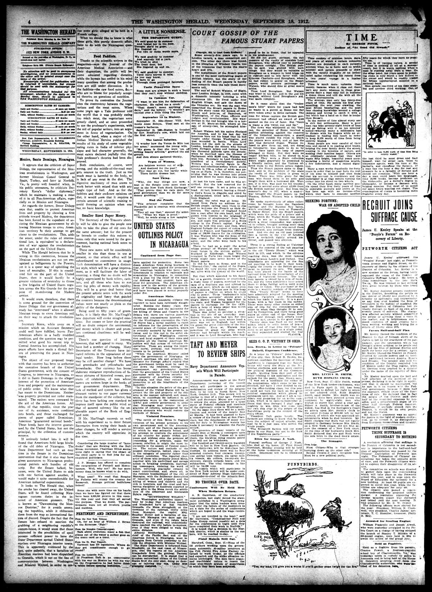

Mexico, Santo Domingo, Nicaragua.México, Santo Domingo, Nicaragua.
The Washington Herald. Washington, D.C., September 18, 1912. Page 4. Published by Washington Herald Company. A daily newspaper, 1906–1939.The Washington Herald. Washington, D.C., 18 de septiembre de 1912. Página 4. Publicado por Washington Herald Company. Periódico diario, 1906–1939. View the originalVer el original

The Washington Herald published a critical editorial on U.S. Caribbean policy, arguing that intervention in Santo Domingo had overawed local populations rather than establishing true order. The paper criticized the conversion of Dominican debts into bonds backed by American customs administration and warned that financial interests were applying the same model to Nicaragua. The piece labeled this strategy "Dawsonizing the Monroe Doctrine," describing it as de facto control that avoided outright annexation.The Washington Herald publicó un editorial crítico sobre la política caribeña de los Estados Unidos, sosteniendo que la intervención en Santo Domingo había intimidado a la población local en lugar de fundar un orden verdadero. El diario censuró la conversión de las deudas dominicanas en bonos respaldados por la administración aduanera estadounidense y advirtió que los intereses financieros estaban aplicando ese mismo modelo a Nicaragua. El artículo calificó esta estrategia como una «dawsonización de la Doctrina Monroe», describiéndola como un control de facto que eludía una anexión abierta.
FULL TEXT:TEXTO COMPLETO:
Mexico, Santo Domingo, Nicaragua.México, Santo Domingo, Nicaragua.
It appears that the criticism of Senor Didapp, the representative of the Mexican revolutionists in Washington, and former Mexican Consul General to Spain, Turkey, and later at Norfolk, Va., is pretty well founded when, in his public utterances, he criticises Secretary Knox’s “dollar diplomacy,” which he maintains is making a mess of it in all Pan-American affairs, especially so in Mexico and Nicaragua.Parece que la crítica del Señor Didapp, el representante de los revolucionistas mexicanos en Washington, y antiguo Cónsul General mexicano en España, Turquía, y más tarde en Norfolk, Virginia, está bastante bien fundada cuando, en sus declaraciones públicas, critica la «diplomacia del dólar» del Secretario Knox, que él mantiene está haciendo un desastre en todos los asuntos panamericanos, especialmente en México y Nicaragua.
As regards the former, Senor Didapp says that, unable to protect American lives and property by showing a firm attitude toward Madero, the department has been forced to the expedient of assisting the Mexican government by allowing Mexican troops to cross American territory in their attempt to get closer to the revolutionists. This, adds the senor, under the rules of international law, is equivalent to a declaration of war against the revolutionists on the part of the United States.En cuanto al primero, el Señor Didapp dice que, incapaz de proteger vidas y propiedades estadounidenses mostrando una actitud firme hacia Madero, el departamento ha sido obligado al expediente de asistir al gobierno mexicano permitiendo que tropas mexicanas crucen territorio estadounidense en su intento de acercarse más a los revolucionistas. Esto, añade el señor, bajo las reglas del derecho internacional, es equivalente a una declaración de guerra contra los revolucionistas por parte de los Estados Unidos.
While The Herald believes that he is wrong in this contention, because the Mexican revolutionists are not yet recognized as belligerents by the Powers, yet it is a queer way of upholding the laws of neutrality. If this is considered fair on the part of the United States, then it would hardly be a greater violation of neutrality to throw a few brigades of United States regulars across the Rio Grande for the purpose of re-enforcing the Madero armies.Aunque The Herald cree que está equivocado en esta contención, porque los revolucionistas mexicanos todavía no son reconocidos como beligerantes por las Potencias, sin embargo es una manera extraña de sostener las leyes de neutralidad. Si esto se considera justo por parte de los Estados Unidos, entonces difícilmente sería una violación mayor de la neutralidad lanzar unas brigadas de regulares de los Estados Unidos a través del Río Grande con el propósito de reforzar los ejércitos de Madero.
It would seem, therefore, that there is some ground for the contention of Senor Didapp that our government already has “intervened” when it allowed Mexican troops to cross American soil on their way to attack the revolutionists.Parecería, por tanto, que hay algún fundamento para la contención del Señor Didapp de que nuestro gobierno ya ha «intervenido» cuando permitió que tropas mexicanas cruzaran suelo estadounidense en su camino a atacar a los revolucionistas.
Secretary Knox, while away on a mission which an Assistant Secretary could well have fulfilled, leaves Pan-American affairs in a badly muddled condition, and the question may be permitted what good his recent trip to Central America has accomplished. His peace efforts have made a dismal failure of preserving the peace in Nicaragua.El Secretario Knox, mientras está fuera en una misión que un Secretario Auxiliar bien podría haber cumplido, deja los asuntos panamericanos en una condición muy enredada, y puede permitirse la pregunta de qué bien ha logrado su reciente viaje a América Central. Sus esfuerzos de paz han hecho un fracaso lamentable en preservar la paz en Nicaragua.
The object of our proposed treaty with that country has been to authorize the executive branch of the United States government, with the consent of Congress, to intervene in Nicaragua, as it did in Santo Domingo in the alleged interest of the protection of American lives and property and the maintenance of public order. We know what that has meant to the Dominicans. Neither was property protected nor order maintained. The natives were overawed by the aid of the American forces. All debts of that republic, since the year one of its existence, were combined into bonds, and these exchanged for pieces of paper called Dominican-American “guaranteed national bonds.” These bonds have the interest guaranteed by the United States, but not the principal, by the collection of customs moneys.El objeto de nuestro tratado propuesto con ese país ha sido autorizar a la rama ejecutiva del gobierno de los Estados Unidos, con el consentimiento del Congreso, a intervenir en Nicaragua, como hizo en Santo Domingo en el alegado interés de la protección de vidas y propiedades estadounidenses y el mantenimiento del orden público. Sabemos lo que eso ha significado para los dominicanos. Ni la propiedad fue protegida ni el orden mantenido. Los nativos fueron intimidados con la ayuda de las fuerzas estadounidenses. Todas las deudas de esa república, desde el año uno de su existencia, fueron combinadas en bonos, y estos intercambiados por pedazos de papel llamados «bonos nacionales garantizados» dominico-estadounidenses. Estos bonos tienen el interés garantizado por los Estados Unidos, pero no el principal, por la colecta de dineros aduaneros.
If seriously looked into it will be found that Americans hold large blocks of the old debts of Nicaragua. The State Department had such an easy time in the Senate in the Dominican intervention deal that it also may have given assurances to Nicaraguan professional patriots with bundles of old scrip. But the Senate balked, because, were the United States to side with one faction against another, it would make it quite uncomfortable for American industrial expansionists.Si seriamente se investiga se encontrará que estadounidenses tienen grandes bloques de las viejas deudas de Nicaragua. El Departamento de Estado tuvo un tiempo tan fácil en el Senado en el trato de la intervención dominicana que también puede haber dado aseguramientos a patriotas profesionales nicaragüenses con paquetes de viejos valores. Pero el Senado se resistió, porque, si los Estados Unidos se pusieran del lado de una facción contra otra, haría bastante incómodo para los expansionistas industriales estadounidenses.
It looks to The Herald that, when the smoke has cleared away, the United States will be found collecting Nicaraguan customs duties in the interest of American pioneers. This is known as “Dawsonizing the Monroe Doctrine,” for it avoids annexing the republics, while it obliterates them from the map as international factors of discord. Despite the fact that the Senate has refused to sanction the grabbing of a neighboring republic's custom-house, it would seem that those interested in the possibilities of spoil possess sufficient power to have the State Department spread United States marines over Nicaragua interior towns. This is apparently evidenced by the fact, quite palpable, that a battalion of American marines had been dispatched to Granada, which is not on the line of communication between Washington and Minister Weitzel, in order to rescue some girls alleged to be held in a French college.Parece a The Herald que, cuando el humo se haya despejado, los Estados Unidos serán encontrados colectando derechos aduaneros nicaragüenses en interés de pioneros estadounidenses. Esto se conoce como «Dawsonizar la Doctrina Monroe», pues evita anexar las repúblicas, mientras las borra del mapa como factores internacionales de discordia. A pesar del hecho de que el Senado ha rehusado sancionar el apoderamiento de la aduana de una república vecina, parecería que aquellos interesados en las posibilidades de botín poseen suficiente poder para hacer que el Departamento de Estado esparza infantes de marina de los Estados Unidos sobre pueblos del interior de Nicaragua. Esto aparentemente se evidencia por el hecho, bastante palpable, de que un batallón de infantes de marina estadounidenses había sido despachado a Granada, que no está en la línea de comunicación entre Washington y el Ministro Weitzel, con el fin de rescatar algunas muchachas alegadamente retenidas en un colegio francés.
What we should like to know is what these girls, this purely domestic affair, have to do with the Nicaraguan question?Lo que quisiéramos saber es qué tienen estas muchachas, este asunto puramente doméstico, que ver con la cuestión nicaragüense?
This collection gathers the coverage of the Dominican Republic in the American press, in the order it was published.Esta colección reúne la cobertura de la República Dominicana en la prensa estadounidense, en el orden en que se publicaron.